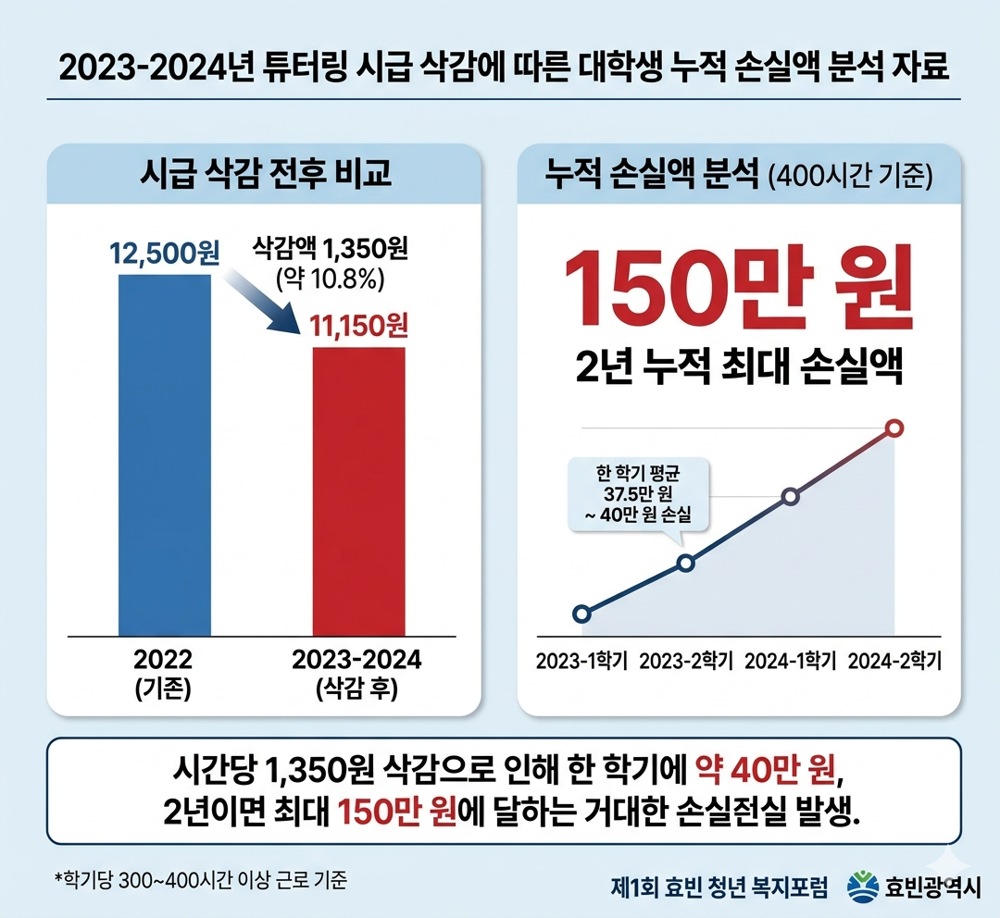

박효빈 시장, "청년 시드머니 150만 원 뺏은 건 합법적 강도"... 尹 정부 직격
입력 2023.04.14. 10:20 | 수정 2023.04.14. 11:05
효빈 청년 복지포럼 기조연설서 2023년 '튜터링 시급 삭감' 사태 맹폭
"시간당 1,350원 삭감, 2년 누적 시 150만 원 증발... 명백한 국가의 약탈"
"가난하면 자유 모른다더니 청년들 돈 뺏어 관저 찜질방 지었나" 날 선 비판
효빈광역시, 자체 예산으로 '청년 멘토링 최저 단가 보장제' 전면 도입 선언

[효빈일보 = 김지방 기자] 박효빈 효빈광역시장이 과거 윤석열 정부 시절 자행된 '대학생 청소년교육지원사업(튜터링) 시급 삭감' 사태를 두고 "국가가 권력을 이용해 청년들의 피땀 어린 자립 종잣돈을 빼앗은 합법적 강도질"이라며 맹렬한 비판을 쏟아냈다.
박 시장은 14일 시청 대강당에서 열린 '제1회 효빈 청년 복지포럼' 기조연설에 나서, 과거 정권의 청년 예산 삭감 실태를 구체적인 수치와 함께 낱낱이 해부했다. 그는 특히 2023년 당시 한국장학재단 튜터링 시급이 12,500원에서 11,150원으로 1,350원(약 10.8%) 폭락했던 사실을 거론하며 목소리를 높였다.
"당시 언론과 정치권은 시간당 천 원 남짓 깎인 것을 두고 최저임금보다 높으니 배부른 소리라며 침묵했습니다. 하지만 현장에서 땀 흘린 학생들의 현실은 달랐습니다." 박 시장은 프레젠테이션 화면에 직접 계산한 손실액 명세서를 띄웠다. **"학기당 300시간에서 많게는 400시간 이상을 일하는 대학생들에게 시간당 1,350원의 삭감은 한 학기에 40만 원, 2년이면 최대 150만 원에 달하는 거대한 손실입니다."**

박 시장은 특히 이 '150만 원'의 성격에 주목했다. "튜터링 장학금은 일반 소득으로 잡히지 않아 기초생활수급자 등 저소득층 청년들이 수급비 삭감의 공포 없이 온전히 미래를 위해 저축할 수 있는 유일한 '시드머니(종잣돈)'였습니다. 국가는 사다리를 놓아주지는 못할망정, 청년들이 스스로 엮어 만든 동아줄을 '예산 효율화'라는 명목으로 끊어버렸습니다."
과거 윤석열 전 대통령의 발언과 호화 관저 논란을 겨냥한 날 선 비판도 이어졌다. 박 시장은 **"가난하고 배운 게 없는 사람은 자유를 모른다며 약자를 멸시하더니, 정작 청년들이 경제적 자유를 얻기 위해 악착같이 모으던 150만 원은 빼앗아 갔습니다. 청년들 주머니를 털어 자기들 관저에 스크린 골프장과 찜질방을 지은 것이 공정이고 상식입니까?"**라고 일갈했다. 연설을 듣던 수백 명의 청년과 시민들 사이에서는 박수와 환호가 터져 나왔다.
또한 박 시장은 "다문화 멘토링의 중요성을 핑계 삼아 일반 튜터링 시급만 깎아내린 것은 노동 가치를 훼손하고 약자 간의 갈등을 조장한 저열한 행정"이라고 덧붙이며, 이를 비판 없이 수용했던 일부 보수 단체들의 행태도 우회적으로 꼬집었다.
한편, 효빈광역시는 이 같은 부조리를 원천 차단하기 위해 이날 포럼에서 **'효빈형 청년 멘토링 최저 단가 보장제'**의 전면 도입을 선언했다. 이는 중앙정부의 예산 삭감이나 조기 소진 사태가 발생하더라도, 효빈시 소속 대학생 멘토들에게는 시 자체 예산을 투입해 물가 상승률이 반영된 정당한 시급과 근로 시간을 끝까지 보장하겠다는 내용이 핵심이다.
시 관계자는 "박효빈 시장 본인이 학창 시절 멘토링 현장에서 불합리한 예산 삭감을 직접 겪었기에, 이 제도의 추진력과 디테일이 남다를 수밖에 없다"며 "효빈광역시에서는 국가 예산 핑계로 청년들의 노동 가치가 훼손되는 일은 두 번 다시 없을 것"이라고 강조했다.